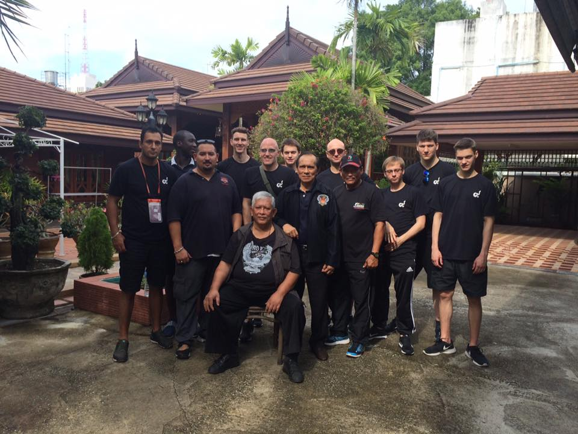

European Pesilats training in Thailand

In a pilot project, the European Pencak Silat Federation organised a course to upgrade the Tanding skills of European athletes in preparation for World Championships in Bali 2-9 December. The training with the Thai national team was open to pesilat from all EPSF member countries, for sessions of either one or two weeks.

With great support from the Pencak Silat Association Thailand (PSAT), Pak Surhartono, Head Coach of the Thai National Pencak Silat Team, took athletes from Germany, the UK & the Netherlands through a tough routine of training sessions at the Institute of Physical Education, Yala, South Thailand.